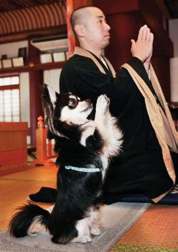

A praying dog has been found in a Zen Buddhist temple in Japan. Conan the Chihuahua joins in the prayers by copying his master, Joei Yoshikuni.
The remarkable dog prays in front of the temple’s altar as he sits on his hind legs and joins his front paws together. The little one and a half year old is now attracting tourists to the Shuri Kannondo temple in Naha. Conan prays twice a day before his meals and now Joei is trying to teach him to meditate, sort of. “Basically, I am just trying to get him to sit still while I meditate”, the monk said. This should make the debate livelier about whether animals also have souls.
Angry supporters of Irish League football team Ballymena United were recently involved in crowd trouble. They were so incensed by one referee’s decisions in a match that they threw a chair, a bottle and… a leg of lamb. The referee and his assistants had to be escorted from the pitch by the police. Trouble started after Ballymena’s 2 all draw against Lisburn Distillery. United fans were angered by the referee’s decision not to send Distillery goalkeeper Phillip Matthews off. He had sent two United players off and the fans claimed this was unfair. They also alleged that Distillery players had made offensive gestures at them. The referee had to wait 15 minutes until he got off the pitch and now the IFA is planning disciplinary action. Just who would bring a leg of lamb to a football match remains a mystery. ✪